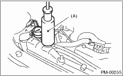
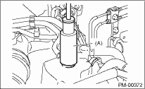
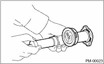
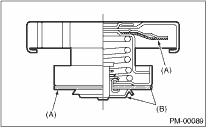

1. To check the radiator for leakage, fill it with engine coolant, and attach the radiator cap tester (A) to the filler neck, and apply pressure.
Pressure:
Non-turbo model
157 kPa (1.6 kg/cm2, 23 psi)
Turbo model
122 kPa (1.2 kg/cm2, 18 psi)
Check the following points:
• Leak from radiator
• Hose joints and other connections for leakage
CAUTION:
• For turbo model, be sure to install the tester to filler tank side.
• Be particularly careful not to deform the filler neck of radiator when installing and removing the tester and after testing.
• When performing this check, be sure to keep the engine stationary and fill radiator with coolant.
• Wipe off check points before applying pressure.
• Use care not to spill coolant when detaching tester from radiator.
• Non-turbo model

• Turbo model

2. Check the radiator cap valve open pressure using radiator cap tester.
Raise the pressure until the needle of gauge stops and see if the pressure can be retained for five to six seconds. The radiator cap is normal if a pressure of the service limit value or more has been maintained for this period.
CAUTION:
Rust or dirt on the cap may prevent valve from functioning normally; be sure to clean the cap before testing.
Radiator side for non-turbo model and coolant filler tank side for turbo model
Standard value:
93 — 123 kPa (0.95 — 1.25 kg/cm2, 14 — 18 psi)
Service limit pressure:
83 kPa (0.85 kg/cm2, 12 psi)
Radiator side on turbo models
Standard value:
122 — 152 kPa (1.24 — 1.55 kg/cm2, 18 — 22 psi)
Service limit pressure:
112 kPa (1.14 kg/cm2, 16 psi)


|
(A) |
Check points for deformation |
|
(B) |
Check points for deformation, damage, rust |
3. Start the engine, and then inspect that it does not overheat or it is cooled excessively. If it overheats or it is cooled excessively, check the cooling system. 
4. Check the radiator fan operates using Subaru Select Monitor, when the coolant temperature exceeds 95°C (203°F). If it does not operate, check the radiator fan system.